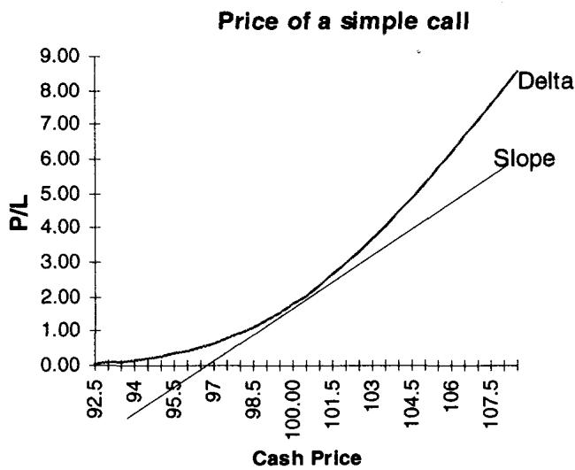
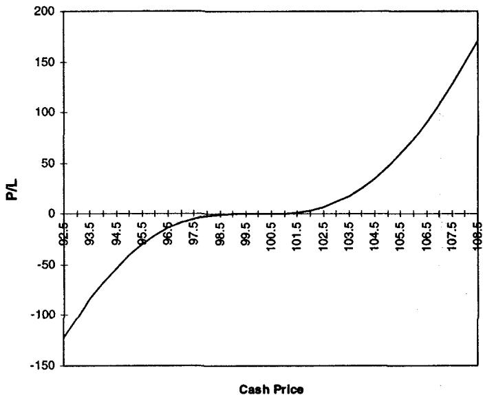
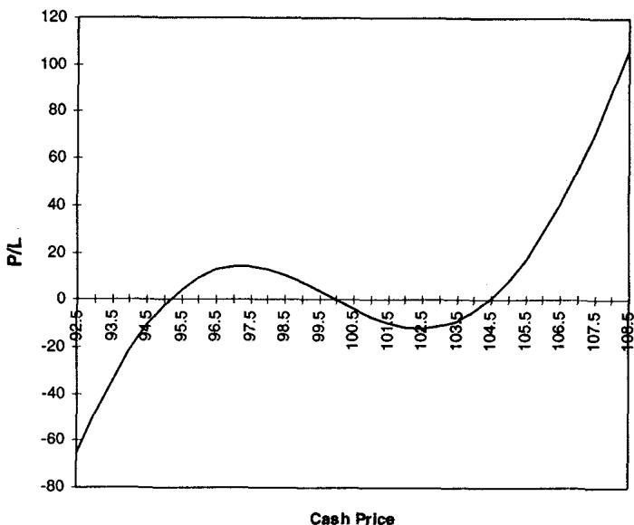
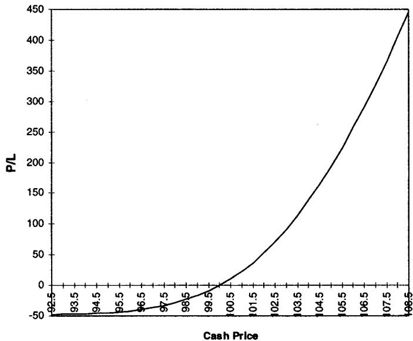
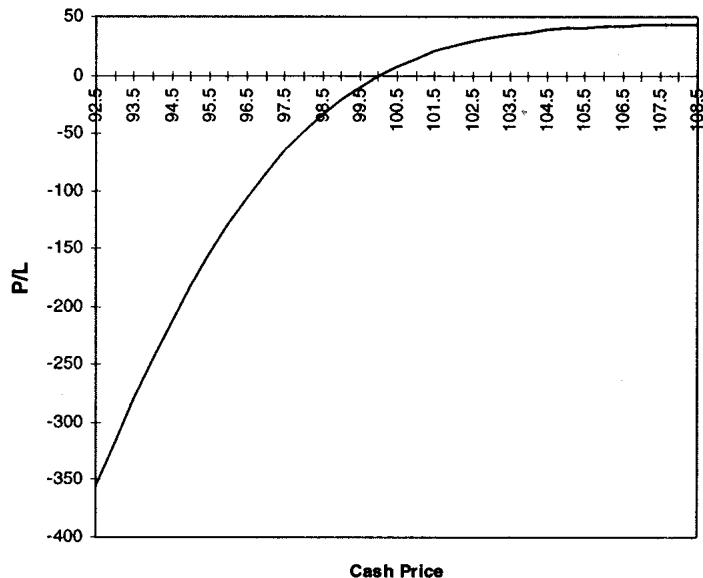
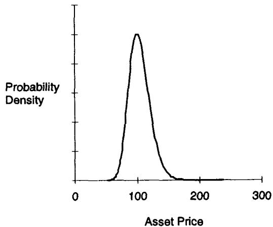
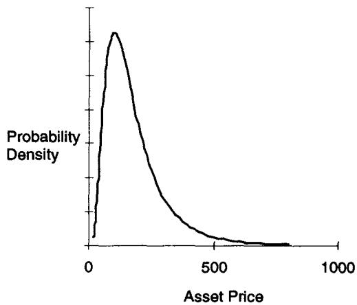

第七章：改造 Black-Scholes-Merton —— Delta（Adapting Black-Scholes-Merton: The Delta）
It is always preferable to be roughly hedged against a broad set of eventualities than exactly hedged against a narrow parameter. —— Marty O'Connell
导读：本章要解决的问题
从这一章开始进入全书第二部分"度量期权风险"。一个金融工程出身的读者早已能从 BSM 的封闭解里把五个希腊字母逐阶求出来，也清楚 、 各自是什么。本章要处理的问题在这套公式的下游：当你拿着模型吐出的那个 delta 走进真实市场去对冲一个多空混合的组合时，这个数还可信吗？它什么时候是对冲比率，什么时候只是一个会把你引向爆仓的幻觉？
Taleb 的总立场可以压成三句话。第一，BSM 并不需要被替换；它是一套交易员已经摸清脾气、知道如何"做手脚"绕开其假设的近乎非参数的定价系统，改造这一个胜过去换一个参数更多的新模型。第二，模型给出的连续时间 delta 是为数学推导服务的，拿它当对冲比率、当风险度量，会在组合、障碍、极端波动率三类场景里彻底失效。第三，真正能用的是离散 delta，它的步长由操作者的效用和再平衡频率决定，于是 delta 这个本该"客观"的数，不可避免地把交易员的主观判断重新请了回来。
本章的核心价值，对我们这类读者，在于补全一组理论映射：
- "改造而非替换 BSM"对应统计学上的参数估计风险与偏差-方差权衡，参数越多、估计误差越大，这正是 jump diffusion、随机波动率、HJM 这些"更高级"的模型相继死掉的原因。
- "连续 delta 不是对冲比率"对应局部线性化在二阶项不可忽略时失效，需要 gamma、speed（DgammaDspot）、vega 一起补全。
- "离散两侧 delta"就是中心差分，它天然吃进了一部分曲率。
- "现金 delta vs 远期 delta"是一个贴现因子的事，背后牵出 numeraire 相对性。
- "delta 与实值概率"对应 与 的关系，以及外汇里那个漂亮的两国悖论：本币计价者的 delta，等于外币计价者的实值概率，这是一次彻头彻尾的 change of numeraire。
笔记沿原文小节顺序展开，并在每个节点把这层映射写出来。
一、真实世界与 BSM 的五条假设
Taleb 用一条风险管理规则给整个第二部分定调：
与其用一个更先进但更新的模型，不如去改进一个简单但久经考验的模型；用估计参数数目最少的模型。
这句话不是怀旧，它有统计学的硬道理，下一节会展开。这里先看 Taleb 对 BSM 本质的判断。他称 BSM 是一套近乎非参数（almost nonparametric）的定价系统：有了它，交易员先得到一个统一的价格基准，再把额外的参数当作非正式的"补丁"加上去（跳跃因子、波动率的波动率、资产价格与利率的相关性、对底层过程的不同统计估计）。越是奇异期权，需要补的参数越多。
BSM 的本质：完全市场下的风险中性复制
模型的本质是在一个被称为"完全（complete）"的市场里对证券做风险中性复制。但这绝不意味着每个套利者都必须真的去复制每一张证券。
Taleb 在这里纠正一个常见误读。以一只日本股票上的认股权证为例，由于做空该股票常常很困难，参与套利的人实际上无法对它做动态复制；然而这并不导致公允价值改变，因为复制成本只是束缚了套利者，而不是改变了无套利价格。BSM 也不要求每个操作者都在标的的无穷小变动上保持 delta 中性，总有某个"看不见的被动复制者"会在权证和股票之间来回交易，把价格钉在公允值附近。
这里有一个对我们很重要的理论点。Taleb 说，正如某些期权的价值可以被看成另一些期权的极限分解（明知这种价值无法通过复制真正实现），我们也可以把 BSM 公允价格理解为风险中性套利的极限。换句话说，完全市场和连续复制是一个理想化的极限对象，现实中的价格向它收敛，靠的是套利压力而非每个人都真的连续调仓。还有一层：一个必须持有证券到到期的操作者，在做买入决策时用的是期限方差（term variance），它与证券的无穷小瞬时方差并不相同。这正是后面 vega、theta 期限结构问题的伏笔。
五条假设：两条根本，三条参数
BSM 建立在五条假设上。Taleb 把它们分成两类：前两条是根本性的（属于模型的哲学内核），后三条是参数性/分布性的（可以改动而不动摇模型骨架）。
- Ito 过程（根本）。带一个独立同分布的随机项（布朗运动），核心特征是无记忆性（memoryless）。Taleb 顺手反驳了早期批评者对"连续价格"的纠缠：连续金融是一个工具，不是一个哲学主张。
- 无摩擦市场（根本）。没有交易成本、调整成本、印花税、外汇管制。它和第一条合起来意味着操作者可以大量买卖来调整 delta，由此完全消除效用函数的影响。交易成本的存在会改变孤立操作者的对冲策略，却不改变公允价值。
- 常数波动率（参数）。日变动来自同一分布、方差已知，并导致不同资产间的常数相关性。
- 几何布朗运动（分布）。资产运动是"几何"的，对数收益的期望方差保持恒定。
- 常数（且已知）漂移（参数）。用交易员的话说，远期斜率的结构是恒定的。
对每条假设，Taleb 给出现实代价以及修正方向，这构成了后续所有"shadow 希腊字母"的纲领：
- 假设 1 需要在严重路径依赖时放弃，例如流动性洞，尤其当期权的制造行为本身会冲击标的路径时（组合保险 portfolio insurance 是典型）。
- 假设 2 被削弱意味着交易员无法在每一个微观跳动上都调 delta。调仓越不频繁，单笔交易对理论价值的跟踪越差，但只在长期成立。于是操作者被迫让理论价值与动态复制分家：价值仍可由连续时间金融给出，但 delta 必须离散地计算。
- 假设 3 最容易修正。波动率不稳定，因为交易员就在做它的市场（可以买卖波动率），由此历史波动率与隐含波动率分家。波动率不稳定会让 delta 失去对冲比率的资格（除非适当修正），让 gamma 失去对 delta 变化的预测力。好在波动率变化与市场移动幅度之间常有可利用的联系，本书会用到。波动率非常数还导致**波动率曲线（volatility curve）**的出现，必须对其行为做假设。
- 假设 4 在第 11 章讨论；某些情形分布可视为算术的，如 Bachelier 的早期工作。
- 假设 5 有两个后果：漂移率本身在动（利率远非常数），且常与资产价格变动相关（在墨西哥这类"有偏"资产上联系明显）；漂移不做平行移动，而是以可预测的方式移动。
理论映射：BSM 为什么"近乎非参数"
把 Taleb 这套话翻译成我们熟悉的语言：BSM 的两条根本假设（Ito 过程 + 无摩擦）共同保证了风险中性测度的存在唯一和偏好无关定价（preference-free pricing），这是 Harrison-Pliska 那套等价鞅测度框架的内容。无摩擦把效用函数清出定价，正是 Taleb 说的"完全消除效用函数影响"。
而它被称为"近乎非参数"，关键在第三条假设可以被一种很取巧的方式架空：交易员不去精确估计真实的波动率过程，而是让 成为 strike 与到期的函数，用一张波动率曲面去吸收掉所有模型设定误差。这一步把 BSM 从一个刚性的参数模型，变成了一个以隐含波动率为自由刻度的校准框架。后面"Why Good Models Die"讲的就是为什么交易员宁愿这样 fudge 一个参数，也不愿去多估两个参数。
二、希腊字母及其缺陷：一张总览表
本章正文之前，Taleb 给了一张贯穿第二部分的总表，列出每个希腊字母的定义、缺陷与修正方向。这张表是整个 Part II 的目录，值得完整誊下来并逐行读出它的潜台词。
| Greek | 定义 | 缺陷 | 修正 |
|---|---|---|---|
| Delta | 衍生品价格对标的的敏感度 | 连续时间对冲只存在于教科书；对多空混合的期权组合，delta 不再是对冲比率；它是极弱的风险度量 | 用带增量的离散 delta；shadow delta 给它掺入一点 vega 和 gamma |
| Gamma | delta 的变化率（"曲率"） | 对期权组合无意义；不考虑市场移动时波动率的变化 | 同样用离散增量；分别看 up gamma 与 down gamma；shadow gamma 计入波动率微笑；skew gamma 度量上行/下行引起的非线性波动率变化 |
| Theta | 期权组合对时间的敏感度 | 不考虑到期临近时波动率的变化；不考虑市场完全不动时波动率会下降 | 用波动率期限结构把组合重定价到一天之后（仅当波动率被判定会收敛时）；用 shadow theta 在平静市场加速时间衰减、在波动市场减缓它 |
| Vega | 期权对波动率的敏感度 | 在含日历价差的组合里极具误导，因为不同到期的波动率之波动率不同 | 用简单波动率曲线模型做权重；进阶：对各 bucket 用协方差矩阵 |
| Rho1 | 对本币持有成本的敏感度 | 不现实地假设曲线平行移动 | 用简单期限结构模型估计预期头寸 |
| Rho2 | 对股息/票息/外币利率的敏感度 | 同 Rho1 | 同 Rho1 |
| Convexity | 描述衍生品非线性的统称 | 这个被滥用的词假设平行移动、等幅波动 | 用简单收益率曲线模型（基于方差的单因子模型）做权重 |
| Omega | 速算美式香草的预期寿命，或美式二元/敲出的预期退出时间 | 不考虑时空两点之间的局部波动率（远期波动率、skew 斜率） | —— |
| Alpha | 计算 gamma 成本的方法 | —— | —— |
| Correlation Vega | 计算组合中某结构价格对各种相关性的敏感度 | —— | —— |
读这张表，潜台词只有一句：**每个希腊字母作为一阶局部敏感度，在被加总到组合、被推到参数联动的场景时都会失真。**所有修正手段（discrete、up/down、shadow、skew、bucket）做的都是同一件事，把被连续时间假设抹掉的二阶以上结构、把被"参数互不影响"假设抹掉的联动结构，重新补回到这个数里。Omega 那一行尤其值得记住，它把"美式期权的预期寿命"当成一个可速算的量，正是第一章里美式期权 = 可展期复合期权那条线的延续。
Option Wizard：好模型为什么会死
大多数试图修正 BSM 缺陷的新模型都没活下来。
Taleb 点名了几个"死者"。Merton 的跳跃扩散（jump diffusion）令人钦佩且现实，却很少被实现，原因简单：它要多估两个参数，泊松跳跃的幅度和频率。Hull-White (1987) 那类随机波动率技术同样被打入商学院图书馆的冷宫，因为又要多估两个参数，波动率的波动率、以及波动率与某个资产价格指标的相关性。Heath-Jarrow-Morton 框架下那些强有力的收益率曲线模型也一样，尽管研究部门极力主张，交易员仍然回避它们，转而拥抱他们懂得如何"做手脚"的简单 BSM。
Taleb 强调，交易员并没有被 BSM 公式骗到，"波动率曲面"的存在本身就是一种适应：他们觉得宁可 fudge 一个参数（让波动率成为到期与 strike 的函数），也不愿被迫去精确估计另一个参数。
理论映射：参数节俭是统计纪律，不是惰性
这一节最该被我们吸收的，是它背后那条统计原理。多估一个参数，就多引入一份估计误差。设模型预测的均方误差可分解为
跳跃扩散、随机波动率这些模型降低了偏差（设定更贴近真实过程），却以抬高方差为代价，因为新参数（跳跃频率、vvol、相关性）样本内难以稳定估计，样本外漂移很大。当估计方差的上升盖过偏差的下降，"更真实"的模型在实盘里反而更差。Taleb 说的"better models often create nightmares"，精确的数学含义就是这个偏差-方差权衡在金融时间序列（短样本、非平稳、厚尾）里几乎总是倒向节俭的一方。
把波动率做成 strike 与到期的函数（波动率曲面），则是一种非参数校准思路：不去硬估那些不可观测的高阶参数，而是用市场报价直接反解出一个能完美拟合当下价格的等效波动率场。代价是这个场会随时间漂移、需要重新校准，但交易员认这个代价，因为它至少不会让你押注于一个估不准的结构参数。BSM 技术细节见 Module G，教学化推导可参考 Hull (1993)、Cox-Rubinstein (1985)、Jarrow-Rudd (1983)。
三、Delta 的定义，以及最大的误解
Delta 是衍生品价格对标的资产移动的敏感度，可以用百分比或总金额表示。50% 的 delta 意味着衍生品的敏感度是标的的一半，需要两美元面值的衍生品才能复制一美元标的的行为。数学上它是产品对标的的一阶导数，即无穷小移动下的对冲比率。Taleb 立刻给出第一个裂缝：一旦组合里不止一张期权、含多空组合，delta 和对冲比率就开始分道扬镳。
Delta 并不限于期权和或有权益，远期、期货和其他线性产品也有 delta，而且在线性产品上它的精度更高。这里"线性"指的是非动态对冲，正是动态对冲让 delta 变得浑浊。远期的 delta 还要计入现金流贴现，以便和现货产品等价。
Taleb 接着抛出本章的中心论断：金融市场里最大的误解就附着在 delta 的定义和含义上。每个操作者本能地知道连续时间对冲永远不可能实现，而离散与连续的差距在风险逆转（risk-reversal）、障碍期权这类特殊情形里会急剧放大。试图给 delta 赋予风险管理意义，等于否认参数之间的动态互动，它迎合的是非专业者想"零成本拿到一个数字化敞口"的愿望。在动态市场里没有什么能被图式化（schematized）。当交易员从单一期权走向多空组合，delta 的意义随之流失。许多交易员至今活在一个 delta 限额之下，而不是更全局的情景分析之下。
连续时间模型应当用于定价、用于得到一个基准公允值，而不是用于对冲。
这条规则是本章的脊柱。把它和第一章那条"连续时间给价值、离散计算 delta"对照读，Taleb 的态度很清楚：封闭解负责告诉你这张合约值多少钱，真正的对冲动作必须在离散、带摩擦、带跳变的世界里另行决定。
四、Delta 的特征：切线与它的谎言

图 7.1 画的是一个简单策略的 delta。100 strike 的 call 在 15.7% 波动率下定价，初始 delta 是 50。这个 delta 表现为期权价格曲线在原点 100 处的切线，给出价格变化在原点的斜率。这一步对我们没有新意，它就是 的几何形象，切线斜率即一阶导数。

图 7.2 的标题"Delta and other lies"带着 Taleb 一贯的挖苦。它要说明的是：delta 确实是关于原点 100 的一个对冲，但只要价格离开原点，切线（直线）和真实价格曲线之间就裂开一道缝，这道缝就是被一阶线性化丢掉的曲率。对冲需要在这道缝出现的地方做调整。用我们的语言，这就是泰勒展开的余项：
切线只抓住了第一项，价格一旦移动， 这一项就开始累积。图 7.2 的"谎言"正是这一项。Taleb 想让我们在视觉上记住：delta 只在原点的一个无穷小邻域里诚实，离开邻域它就开始撒谎，撒谎的速度由 gamma 决定。
五、连续时间 delta 并不总是对冲比率
这一节把上面的几何观察推到风险管理结论。被普遍解释为"等价现货头寸"的 delta，在组合管理里变得不适用。Taleb 直言：资深专业者会忽略当前那种"既是风险度量、又是头寸等价指示"的 delta 定义（尽管他们的研究部门和教科书训练出来的风险经理通常不会忽略）。对任何超出"中等期限、稳定、接近平值"范围的期权，delta 反映不了任何有意义的东西。
值得停下来体会这句限定语。delta 作为对冲比率"基本可信"的适用域非常窄：期限不太长、波动率稳定、且靠近平值。一旦偏离这个域（临近到期、波动率剧烈、深度实值或虚值、含障碍、组合多空混合），delta 这个单一数字就失去了它在教科书里被赋予的双重身份。
Option Wizard：五亿美元的 delta
delta 含义的问题，在障碍期权上被放大到荒谬的程度。
Taleb 讲了一个据称发生在某大机构的真实争论。一位风险经理（按惯例对交易员的解释充满怀疑）要否决一笔障碍期权交易，理由是：delta 在障碍处达到了 10,000%。按他的逻辑，一笔 500 万美元的交易会变成相当于五亿美元的头寸，远超公司任何限额，于是他阻止了交易。
交易员被这套逻辑激怒了。他在这笔交易上的最大风险不到 40 万美元。确实，delta 在 1.399999999 到 1.40 之间跳到了反常的量级，但要向一个半吊子数学家的风险经理解释"delta 有时只是一堆浪费算力的废数"，又不被打成异端，实在太难。
按公式，交易员需要在障碍附近买入五亿美元、再在障碍处或之上卖回，以让过渡平滑。如果这套操作真能做到，障碍期权反倒会成为更好交易的工具。把这笔交易当成一个有正预期回报的单一赌注、放着不动，反而是更稳健的做法。在这个意义上，delta 不携带任何真实含义。有些交易员靠改变到期日来"骗过"障碍期权的 delta（第 20 章）。
正统 delta 与修正 delta
正统定义是
其中 是衍生品 ， 是标的证券。它是期权价格对标的的导数，对应标的无穷小变动引起的期权价格变化。这个概念对数学推导极其有用，但从交易角度看毫无意义，理由有二：市场里根本不存在无穷小的移动；即便存在这种微观移动，也没人会在意它。
要让这个连续时间 delta 变得有用，必须给它配上二阶导数 gamma，再至少配上一个三阶导数 DgammaDspot（即 speed）。又因为波动率会随市场移动而变，还得把 vega 的敞口加进来。Taleb 在这里实际上写出了一个完整的对冲所需的展开层级：一阶不够，要到二阶、三阶，还要跨参数（vega）。
现实世界里更合用的是修正 delta：
这里 是标的发生一个有限变动时引起的期权价格变化。若标的从 100 移到 100.1、call 价格涨了 0.05 点，则 delta 为 ，即 50%。
但只把资产往一个方向（上）移，未必能很好地近似它向下时的行为。更有力的工具是用两侧的平均：
其中 、 分别是标的的下移和上移。
理论映射：两侧 delta 就是中心差分
这三个公式恰好是数值微分的三个层级。正统 delta 是解析导数；单侧修正 delta 是前向差分，截断误差为 ，里面混入了未被控制的二阶项；两侧平均则是中心差分：
它的截断误差降到 ，并且对称地吃进了 gamma 的信息，上移和下移的斜率一平均，一阶项保留、二阶项的偏置被对称抵消，残留下来的恰好反映曲率。Taleb 说离散 delta 的好处是"它纳入了本应补全数学 delta 的一点二阶和三阶导数"，用数值分析的话讲就是：中心差分的有限步长本身就是一个低通滤波器，把局部曲率折算进了这个对冲数里。
由此推出一个关键结论：delta 会依赖于标的变动的幅度 ，而这个增量由操作者自行决定，它可以是操作者效用曲线的函数，也可以是他对未来波动率估计的函数。delta 不再是一个客观的模型输出，它带上了操作者的主观刻度。
六、一个误导性的 delta：风险逆转的例子
Taleb 用一个具体头寸把"连续 delta 不适用"讲透。假设收益率曲线平坦、远期等于现货，所有期权都是欧式、一个月到期。交易员持有：
- long 100 万美元的 96 call（delta 0.824，连续 delta 共 long 824,000 美元）；
- short 100 万美元的 104 call（delta 0.198，连续 delta 共 short 198,000 美元）；
- 总连续 delta 为 long 626,000 美元；
- 他可以卖出 626,000 美元远期来对冲。
表 7.1 给出这个头寸的表现。它的 delta 在除了 100 附近之外的所有价位都是正的。
| 资产价格 | P/L（千） | Delta（千） |
|---|---|---|
| 92.5 | -122 | 420 |
| 93.5 | -84 | 349 |
| 95.5 | -30 | 194 |
| 97 | -9 | 90 |
| 98 | -2 | 39 |
| 99 | 0 | 8 |
| 100 | 0 | 0 |
| 101 | 1 | 16 |
| 102 | 4 | 53 |
| 103 | 12 | 106 |
| 104 | 26 | 171 |
| 105 | 46 | 241 |
| 106 | 74 | 311 |
| 107 | 108 | 377 |
| 108.5 | 171 | 461 |
表 7.1 的损益形态，除了原点附近，几乎和一个简单的多头一样，而原点恰恰是"没人会在意"的地方。Taleb 讲了一个很说明问题的现场实验：在一次期权研讨会上，他问台下这张图代表 long、square 还是 short，所有有交易经验的人都答"long"，而没有交易经验的人答"square"。原因在于：square 的判断是看原点的连续 delta（在 100 处确实为 0、为中性），而 long 的判断是看一个交易员真正在意的、有意义的价格区间内损益怎么走。

接着 Taleb 制造一个悖论。交易员改买 550,000 现金（而不是 626,000）。研讨会上看图 7.3 的人，答案散落在 square、short 和少数 long 之间，取决于他们盯着哪个价格区间：
- 盯极端价位（资产价 93 或 107）的人，看到上涨时正 P/L、下跌时负 P/L，感觉是 long；
- 盯狭窄区间（资产价 99 到 101）的人，感觉是 short；
- 盯中间区间（资产价 95 或 103）的人，感觉是 squarish。
下面是这个修正对冲后的头寸表现（表 7.2）：
| 资产价格 | P/L（千） | Delta（千） |
|---|---|---|
| 92.5 | -65 | 344 |
| 94 | -22 | 235 |
| 95 | -2 | 157 |
| 96 | 10 | 81 |
| 97 | 14 | 14 |
| 98 | 13 | -37 |
| 99 | 7 | -68 |
| 100 | 0 | -76 |
| 101 | -7 | -60 |
| 102 | -11 | -23 |
| 103 | -11 | 30 |
| 104 | -5 | 95 |
| 105 | 8 | 165 |
| 106 | 28 | 235 |
| 108.5 | 107 | 385 |
对比可见，图 7.3 / 表 7.2 的对冲在更大变动范围里比第一种更有效：最大亏损从 -122 降到 -65，最大盈利从 171 降到 107。在一组较宽的假设下，头寸 2 虽然看起来 delta short（原点处 delta 为 -76），却比头寸 1 更接近 delta 中性。对一个 2.5 点的 步长，最大值完全中性。换句话说，选择 550,000 而非 626,000 的对冲量，把"中性增量"加宽到了一个像样的边际。
这正是修正 delta 的实操含义：**对冲量不该由原点切线决定，而该由你真正在意的价格波动区间决定。**你预期要扛多大的移动，就该在那个幅度上去把两侧损益拉平，而不是在一个无穷小邻域里把切线放平。
Taleb 用两个极端问题把这条规则钉死。如果他问研讨会的人"如果有核打击威胁你怎么看"，他们无疑会答"long"；如果问"如果你的时间框架是六分钟呢"，答案会是"short"。由此得到：
一个 delta 取决于操作者对未来波动率的感知、他的效用，以及他可能的调整频率。
当市场流动性越来越好时，这些因素的影响越来越小。操作者被迫把 delta 定义成"对自己重要的增量"的函数：如果损益以分计，前面的头寸看起来是 square；如果以百万计，就需要关注。**操作者不得不让效用曲线悄悄爬进自己的交易。**这一句呼应了第二条根本假设：无摩擦假设把效用清出定价，可一旦承认调仓离散、步长有限，效用就从后门回来了。
七、Delta 作为风险度量：相同的数，截然不同的风险
即便对一个简单头寸，delta 也无法充分度量风险。它会给一个极其危险的头寸和一个极其安全的头寸同一个数。
Taleb 的例子干净利落。两个头寸表达同一个方向观点，一个 long 期权、一个 short 期权，初始 delta 相同：
- 情形 1：交易员 long 1,000 张 call；
- 情形 2：交易员 short 1,000 张同 delta 的 put。


图 7.4 和图 7.5 揭示了差别。两笔交易的 delta 都大约是 long 200,000 美元，可它们的风险结构完全不同。long call 是 long gamma、long vega、损失有界（最多亏权利金）、付 theta；short put 是 short gamma、short vega、收 theta，但在标的下跌时损失加速、尾部敞口巨大。一个数字 delta = 200,000，盖住了凸性符号、波动率敞口符号、尾部损失形态这三处根本差异。
这就是 Taleb 反复敲打的那点：**delta 是一阶量，而风险住在二阶以上。**用我们的语言，两个头寸在 处有相同的 ，但 符号相反、 符号相反，更高阶的尾部损失分布更是天差地别。任何把风险压缩成单一 delta 数（或 delta 限额）的体系，结构性地看不见这两笔交易的区别。这是后面要用 gamma、vega、shadow 希腊字母乃至完整情景重定价的根本理由。
八、混淆之源：按现金还是按远期计 delta
BSM 公式给出的 delta，指的是操作者为对冲期权头寸需要执行的**现金（cash）金额。然而对所有欧式期权，真实敞口落在远期（forward）**上。这一区分我们在第一章已经见过（镜像规则要求用 forward delta），本节给出现金与远期之间的精确换算。
操作者通常更愿意看现金 delta，因为他们一般用现金来对冲，它在屏幕上更易监控、在市场里更易报价。但当他们处理期货期权、或用期货作对冲时，就得用一个匹配未来确切期限的 delta。两者之差有时远非微不足道。一个典型问题是：一个在远期上接近平值的期权，远期 delta 是 50%，现金 delta 是多少？
答案是通过远期的 delta，把潜在的未来敞口转换成现金敞口：用现货-期货增长率作为贴现因子，把远期敞口贴现回来。于是现金 delta 是那个数的贴现值，具体贴现方法取决于期权标的。
理论上这只是一个 numeraire 换算：远期价 （或对应的 carry 形式），远期上的一单位敞口折成今天的现金敞口要乘一个贴现因子。后面"线性工具的 delta"会把各类标的的贴现因子逐一写出来，它们的差别本质上就是用哪个利率/carry 去做这步折算。Taleb 这里只是先点明：屏幕上那个让人安心的现金 delta，和欧式期权真正暴露的远期 delta，差着一个持有成本因子；在长久期、高利率、大利差的场景里，这个差不能忽略。
九、线性工具的 delta
接下来 Taleb 系统处理线性工具的 delta，既作为远期/期货之间的对冲，也作为它们与期权互相对冲的基础。现金与 carry 套利关系可参考 DeRosa (1992; 1996)。这一整节对我们是把"贴现因子从哪来"讲清楚，逻辑统一：远期/期货的 delta 等于把"标的移动一单位带来的损益"贴现回今天现金的那个因子，用哪个利率取决于标的的 carry 结构和盈亏的结算时点。
远期的 delta
不付息资产。 远期价的一般公式
其中 远期、 现货、 到期时间（ 的简写）、 本币利率、 外币利率、 股息率。
外汇远期。 covered interest parity（抛补利率平价）套利公式，通常是交易员学到的第一个、往往也是唯一一个公式：
但远期不会即时交付盈亏，操作者要等到结算日才收付已实现的金额。一年期远期的盈利一年后才变成现金，因此名义资产的价值应当像零息债一样被贴现。于是远期产生的盈亏需要用通常的 贴现回现金。用 表示现货移动：
讽刺的是，只有外币利率才重要。更讽刺的是，delta 既然是贴现后的外币利率，对冲就带上了相对性：两个看同一张远期的人，会因各自的本币不同而用不同的对冲比率。这正是 Module C 那个 numeraire 问题的入口。对我们而言， 这一步是干净的推导：上移产生的远期盈亏先按外汇即期换算（），再按本币利率贴现回今天（），两个指数相乘只剩 。
外汇交叉货币对。 交叉对是未来某点交换两种货币的合约，例如对美国人而言的英镑/马克，或对德国人而言的英镑/美元。设货币 1 和货币 2，现货以"每单位货币 1 折合多少货币 2"表示，远期为
、 分别是两种货币的利率。现在交易员面对一个问题：盈亏用哪种货币计算，这决定了他如何贴现对冲。英镑/马克交易的未实现盈亏既可以是英镑、也可以是马克，交易员无法在不产生外汇敞口的情况下把它换成本币。贴现对冲给出
其中 是 或 ，取决于交易员选哪种货币作"锚"（计算盈亏的货币）。这条公式把第一章"put/call 取决于 numeraire"的相对性，落到了交叉盘对冲比率上：你用哪种货币记账，就用哪种货币的利率贴现，于是同一张交叉远期对不同记账者有不同的 delta。
股票或股指。 对连续付息（一个现实中不存在、但便于建模的假设）的股票或股指，远期 delta 与外汇相同，只是把外币利率换成股息率：
为股息率。股息非连续支付时，需用到期日为止的精确派息。
远期-远期（forward-forward）的 delta
forward-forward 可定义为同一工具在两个不同日期上、一个多头一个空头的算术和。复杂性有时来自两个金额不等价（2 年对 3 年需要正确"tail"以反映现值差异）。取 、 为交割期分别在 、 的两个远期，forward-forward 记作 ，其 delta 等于两个单独 delta 之差：
到 的盈利与到 的盈利要按不同利率贴现，这又带来插值问题：给定 、，如何确定确切的 、 会造成一些困难。更复杂的做法是给每个远期的 delta 加权，因为它们并不是完全相同的头寸。这一段呼应第一章对互换/Eurodollar strip 的处理：forward-forward 的难点不在曲率（它准线性），而在两条腿的现值不等价与曲线插值这些细节。
期货的 delta
期货价的一般公式
（不付息、不付股息资产）。但期货与远期有一处严肃差异：**期货每日以现金结算变动保证金，这消除了交易员对远期施加的那层贴现。**于是各类标的的期货 delta 都不带那个把盈亏贴回今天的折算因子：
外汇：
交叉货币对：
股票/股指（连续股息）：
股息非连续时用到期日为止的精确派息。把这三条和上面远期的三条并排看，规律一目了然：期货 delta 比对应的远期 delta 正好多乘一个 （即少了一次本币贴现），因为期货盈亏当天落袋、不必等到交割再贴回。这就是远期 delta 是"现值化的"、期货 delta 是"raw（未现值化）"的精确含义，也是上一章那张 forward/future 对照表里"工具对冲口径"一行的来源。
线性衍生品 delta 的稳定性。 期货、远期、互换之类的 delta 是稳定的（因此被称为线性衍生品）。它们的二阶导数几乎为零（没有 gamma，只有一点点 convexity），只有一个有意义的一阶导数 delta。因此无需做修正来补偿近似的缺陷，除非在极端波动市场里出现极端凸性。这条把整节收束回第一章的判断：线性工具的 delta 可信，是因为它没有曲率可丢；正是缺了 gamma，它的 delta 才配得上"对冲比率"这个称号。
十、Delta 与障碍期权
交易员临近到期、逼近障碍时，常常被高达 10,000% 的 delta 吓出一手汗，有些情形数字会膨胀到屏幕都显示不下。但 Taleb 重申那则"五亿美元 delta"的教训：这种跳跃往往只适用于一个很小的增量区间，按那个 delta 去对冲是错误的，**摆脱这个念头反而让障碍期权更好交易。**详细处理留到第 19、20 章。
障碍期权呈现的是一种极端的不连续性，对说服任何人相信"用连续时间框架做期权分析有缺陷"极具教学价值。理论上，敲出障碍把期权价值函数在障碍处截断为零，价值曲面在障碍邻域出现近乎阶跃的变化， 在那一点趋于发散。这个数并不代表风险真有五亿，它只是一阶导数在一个测度趋零的区间里爆炸，它度量的是"为了让那条不连续的支付曲线平滑过渡、瞬间需要吞吐的名义量"，而这个量在现实市场里根本无法成交。把它当对冲比率，等于要求你在障碍上下 0.000001 的区间里买卖五亿，这恰恰是连续时间框架在不连续支付上失效的最戏剧化的证据。
十一、Delta 与分桶（bucketing）
bucket 是把相邻到期的敞口按组捆绑起来。delta 的另一个局限是：它不显示"基差（basis）"风险，也不显示桶与桶之间的风险。当面对一个波动的基差、或现金与期货之间隔着很长时间时，现金里的 delta 有时无足轻重。风险经理因此需要看到"分桶"。
这背后的驱动是双重波动：波动率的波动率（会冲击后月 delta）以及利率与 carry 率的波动。换句话说，**一个按现金汇总的总 delta，会把不同期限上方向相反、对不同曲线节点敏感的敞口净掉，从而隐藏掉期限间的真实风险。**这正是上一章把"整条收益率曲线都是固定收益的主要风险"和这一章 vega 缺陷"日历价差里不同到期的 vvol 不同"连起来的地方：单一 delta 看不见基差和期限结构，必须按桶展开。详见第 14 章。
十二、Delta 与在险价值（VAR）
VAR 的完整解释见 Module E。Taleb 给出一个把衍生品风险纳入 VAR 的（他明说是"poor"的）方法：
这就是用二阶泰勒展开把期权头寸近似成一个等价现货头寸。Taleb 立刻用本章那个风险逆转头寸（图 7.1）拆穿它的无力：按这个 VAR 算法，该头寸的总敞口会是零。加进 gamma 也没帮上忙，因为这个头寸的 gamma 恰好为零。
有些风险经理更进一步，把 vega 也加进分析。在这个例子里能改善度量吗？当然不能：尽管藏着各种风险，这笔交易是 vega 中性的。Taleb 指出，要让度量完整，还需要纳入 shadow gamma 以计入头寸的 vega 联动。在他写作之时，评估期权组合风险的可行方法是：在模拟的大幅移动下对期权组合重新定价。
这一节的理论含义对我们很直接：delta-gamma 型 VAR 是围绕当前点的局部二阶展开，它的有效性依赖"移动不大、参数不联动"。而 Taleb 精心构造的头寸在原点处 delta、gamma、vega 同时接近零，局部展开于是给出"零风险"的错误结论，真实风险却藏在离原点较远、且波动率随市场移动而变的区域里。结论是用全重定价（full revaluation）替代灵敏度近似，这正是现代 VAR / 压力测试从 delta-gamma 法走向情景重定价的动因。
十三、Delta、波动率与极端波动率
所有做期权的人都学过：波动率上升会让虚值 call 的 delta 上升、实值 call 的 delta 下降，从而把 delta 都拉向 50%（更精确地说是 50% 的现值）。Taleb 由此引出本章最后、也是理论味最浓的一节：波动率到底如何重塑 delta，以及在三位数波动率的极端场景里这种重塑会夸张到什么程度。
Option Wizard：Delta 与实值概率
delta 是期权的"风险中性"复制；它不等于实值概率（第 17 章详述）。
Taleb 把两个常被混为一谈的量分开。期权价值是风险中性假设下、行权价到无穷（call）或到零（put）之间支付的积分；离散地看，是每种可能结果的支付乘以其风险中性概率之和。delta 是这个价值对标的变化的敏感度。更实务地说，它对应交易员为了让微观移动不产生任何瞬时 P/L 而必须持有的标的比例。
实值概率则是"剥离了对应支付的、被贴现的概率"。在二元期权（第 17、18 章）的研究里会证明：在极低波动率且无 skew 时，delta 与实值概率相等；一旦出现 skew 或高波动率，两者开始背离（高波动率会因对数正态性产生右偏，见图 7.7）。经历过 500% 量级 delta 的障碍期权交易员，凭直觉就完全明白：delta 是复制数量，不是概率，那个吓人的 delta 对应的是为保护账本免于亏损而需要买卖的金额。
理论映射：、 与两国悖论
这一段正是 BSM 封闭解里两个 的交易语言版。无股息时 call 价
其中 是 delta（对 求导）， 是风险中性实值概率 。两者之差完全由
决定。波动率趋零、无 skew 时 ，delta 与实值概率重合；波动率升高， 这道楔子撑开两者，对数正态的右偏让 delta 系统性地高于实值概率。Taleb 说"低波动率下二者相等、有 skew 或高波动率时背离"，精确对应的就是 这一项的大小。
更漂亮的是 Taleb 借两国悖论给出的对称：**用货币对的一侧作 numeraire 时的实值概率，等于用另一侧作 numeraire 时的 delta。**在一张香草 DEM-USD 期权里，美元计价者的 delta，就是马克计价者的实值概率。用我们的语言，这是一次 change of numeraire：从本币风险中性测度 换到以外币计价资产为 numeraire 的测度 ，Radon-Nikodym 导数恰好把一边的 映成另一边的 。这个看似文字游戏的论断，背后是测度变换下 delta 与概率身份的互换，详见第 19 章与 Module C。
几何布朗运动如何拉偏分布
在公式里，资产 服从几何布朗运动
是现价， 是风险中性漂移（利差或 numeraire 利率减 carry）， 是波动率， 是到期时间， 服从标准正态 。条件期望 。
Taleb 用一张电子表格把这件事算给你看。设 年、、，波动率取年化值，得到各 下、 取 到 时的一期之后资产值（表 7.3）：
| σ (%) | Z=-3 | Z=-2 | Z=-1 | Z=0 | Z=1 | Z=2 | Z=3 |
|---|---|---|---|---|---|---|---|
| 10.00 | 90.11 | 93.28 | 96.55 | 99.94 | 103.45 | 107.08 | 110.84 |
| 15.70 | 84.88 | 89.60 | 94.59 | 99.85 | 105.41 | 111.28 | 117.47 |
| 25.00 | 76.91 | 83.84 | 91.40 | 99.85 | 108.60 | 118.39 | 129.05 |
| 50.00 | 58.72 | 69.77 | 82.91 | 98.52 | 117.07 | 139.12 | 165.31 |
| 100.00 | 33.47 | 47.26 | 66.73 | 94.22 | 133.04 | 187.86 | 265.27 |
各 值共享相同概率。注意中心列（）：随着波动率升高，它被 这一项越拉越低（100% 波动率时中心值已跌到 94.22）。Taleb 解释了这背后的两股相反力量：**复利（compounding）**倾向于通过几何收益抬高期望终值，而漂移修正项 又把它拉下来。这个修正项的存在是为了满足鞅性质，每个格子乘以其概率后必须加总回 。
复利来自几何收益：收益会复利，越高的波动率越放大这种复利，于是算术过程（收益恒定）与几何过程（收益依赖资产水平）之间的分歧越大。两股相反力量的净效果，体现为右尾的厚度。

图 7.6 画的是中等波动率下终值 对其概率的分布，已经能看出对数正态的右偏雏形。

图 7.7 是高波动率下的分布：右偏显著加剧，但均值保持不变（100 两侧的面积相等）。这意味着中位数必须向左滑动，滑动量与波动率水平相称。这个左滑会直接作用到 delta 上。用我们的语言，对数正态分布的均值 由 锁定，而中位数是 ，两者相差 ；波动率越高，中位数离均值越远地往左走，平值 call 的 delta 也随之偏离 50%。
极端波动率下的 delta：表 7.4
例子设远期在 100、现货在 100，利率为零以简化，列出 180 天到期的 110 call、90 call、90 put 在各波动率下的 delta（表 7.4）：
| VOL | 90 Put Delta | 110 Call Delta | 90 Call Delta |
|---|---|---|---|
| 10 | -0.06 | 0.09 | 0.94 |
| 15 | -0.15 | 0.20 | 0.85 |
| 20 | -0.21 | 0.27 | 0.79 |
| 30 | -0.27 | 0.36 | 0.73 |
| 40 | -0.30 | 0.42 | 0.70 |
| 50 | -0.32 | 0.46 | 0.68 |
| 60 | -0.32 | 0.49 | 0.68 |
| 80 | -0.32 | 0.54 | 0.68 |
| 100 | -0.31 | 0.59 | 0.69 |
| 120 | -0.29 | 0.62 | 0.71 |
| 140 | -0.27 | 0.65 | 0.73 |
| 160 | -0.26 | 0.68 | 0.74 |
| 180 | -0.24 | 0.71 | 0.76 |
这张表把"波动率把 delta 拉向 50%（的现值）"量化了。看虚值的 110 call：波动率从 10% 升到 180%，delta 从 0.09 一路爬到 0.71，越来越像平值。看实值的 90 call：从 0.94 降到 0.68，同样向中间靠。最耐人寻味的是 90 put：它的 delta 绝对值先随波动率升高而增大（10% 时 -0.06，50–60% 时达到峰值 -0.32），随后竟然回落（180% 时只剩 -0.24）。这正是右偏在作怪：波动率极高时分布的右尾极厚、中位数大幅左移，使得一个名义上虚值的 put 的"有效 moneyness"被这种几何偏斜重新改写，delta 不再单调地随波动率变化。
180% 波动率并不常见，非股票期权交易员可能几年才在一个活跃流动的工具上见到一次。但 Taleb 列出了近年的三位数波动率案例，作为"加速教程"：
- 1987：白银、股指、Eurodollar；
- 1990：石油及相关市场（海湾战争）；
- 1992：short sterling；
- 1995：墨西哥（短期期权据称交易在 250%）、Euro-yen；
- 1992-1993-1995：PIBOR（巴黎银行间拆借利率，法国 Eurodeposit routine 恐慌，以致让初级期权交易员对"la lognormalité"刻骨铭心）。
收尾的警告：债券价格与收益率不能同时对数正态
最后 Taleb 点出一个华尔街的常见隐患。债券上的 call 也可以看成收益率上的 put。定价时，交易员对两者都用几何布朗运动，这是自相矛盾的：价格和收益率不可能同时是对数正态、并在高波动率时都有厚右尾。雪上加霜的是，交易员常把这些工具混在同一个账本里，债券期货（撇开内嵌的择券期权）按对数布朗的价格定价，债券按对数布朗的收益率定价，却被放进同一本账作为彼此的对冲。这种错误混用在高波动率、大账本上会有严重后果，因为那时 delta 之间的差异变得尖锐。多元期权的 delta 与 partial-delta 概念留到第 22 章。
对我们而言，这是一个关于模型内部一致性的警告：价格的对数正态性与收益率的对数正态性不能并存（两者通过一个非线性映射相连，至多一边能是对数正态）。在低波动率下这个矛盾被淹没在噪声里，平静期没人察觉；高波动率一来，两种定价惯例的 delta 就会显著分叉，原本看似抵消的对冲会突然失配。这与全章主线一脉相承：delta 的可信度依赖一堆隐含假设，而这些假设恰恰在你最需要对冲的极端时刻最先崩塌。
十四、本章综述：理论与实务的对照
读完本章，最值得沉淀的是 Taleb 围绕 delta 给出的一组"交易员法则"，以及它们各自对应的理论命题。
| Taleb 的实务命题 | 对应的理论命题 |
|---|---|
| 改造一个简单旧模型胜过换一个参数更多的新模型 | 偏差-方差权衡：，新参数抬高估计方差 |
| BSM 是"近乎非参数"系统；用波动率曲面吸收设定误差 | 等价鞅测度 + 隐含波动率的非参数校准 |
| 连续 delta 是切线，离开原点就撒谎 | 一阶泰勒线性化，余项 |
| 用两侧平均的离散 delta | 中心差分，截断误差 ，吃进曲率 |
| delta 的步长由效用与再平衡频率决定 | 离散对冲下效用从无摩擦假设的后门回归 |
| 障碍处 10,000% 的 delta 无意义 | 不连续支付处一阶导数发散，连续框架失效 |
| 同 delta 的 long call 与 short put 风险天差地别 | 风险住在 、vega 符号与尾部分布，一阶量看不见 |
| 现金 delta = 远期 delta × 贴现因子 | numeraire / 持有成本折算 |
| 远期 delta 是现值化的、期货 delta 是 raw | 期货每日盯市消除贴现，期货 delta = 远期 delta × |
| 外汇远期 delta 只剩 | 相乘，对冲带 numeraire 相对性 |
| delta-gamma VAR 在风险逆转上判出"零风险" | 局部二阶展开失效，需全重定价 / 情景模拟 |
| delta ≠ 实值概率，高波动率/skew 下背离 | vs ，差距 |
| 一侧 numeraire 的 delta = 另一侧的实值概率 | 两国悖论，change of numeraire 互换 |
| 高波动率把分布拉右偏、中位数左移 | 对数正态：均值 不变，中位数 左滑 |
| 价格与收益率不能同时对数正态 | 非线性映射下至多一边可对数正态，混账对冲失配 |
核心观点
第一，连续时间模型负责定价，不负责对冲。封闭解给你一个公允值基准，对冲动作必须在离散、带摩擦、带跳变的世界里另算。这是本章的脊柱，也是"modified 希腊字母"整套工具的出发点。
第二，delta 是极弱的风险度量。它在组合、障碍、极端波动率三类场景里失效；它会给风险天差地别的两个头寸同一个数。任何 delta 限额式的风控，结构性地看不见凸性符号、vega 符号和尾部损失。
第三，离散 delta 把主观性请了回来。步长由效用和再平衡频率决定，于是 delta 不再客观。这谈不上缺陷，它是对"无摩擦"假设的诚实修正：现实里你只能在自己在意的幅度上把损益拉平。
第四，现金与远期的差别是一个贴现因子，但别小看它。线性工具 delta 的整套公式，本质是"用哪个利率把盈亏折回今天"，期货与远期只差每日盯市这一层贴现。
第五，delta 不是概率，波动率会重塑一切。 与 之差由 撑开；极端波动率下分布右偏，连虚值 put 的 delta 都会非单调。
面对一个 delta 数字的操作清单
拿到风险系统给出的任意一个 delta，可依次自问：
- 这是 spot delta 还是 forward delta？做 parity 或跨工具对冲前是否需要乘贴现因子？
- 这个头寸是单一稳定平值期权，还是组合 / 障碍 / 深度实值虚值？若是后者，delta 还能当对冲比率吗？
- 我应该用哪个步长 去算离散 delta？这个步长匹配我真正在意的移动幅度和再平衡频率吗？
- 用了两侧（中心差分）delta 吗？它把多少 gamma 吃进来了？
- 这个 delta 背后的波动率对吗？是否用了该 strike 的 smile 值和正确的期限结构？
- 同一个 delta 数，掩盖了怎样不同的 gamma、vega 和尾部形态？换成 short 期权风险会怎样？
- 障碍附近那个爆炸的 delta，是真实需要成交的量，还是连续框架制造的幻觉？
- 把这个 delta 喂进 delta-gamma VAR，会不会因为原点附近灵敏度近零而判出"零风险"？要不要改用全重定价？
- 在高波动率情景下，分布右偏会把这个 delta 拉向何处？它还单调吗？
- 账本里有没有把"价格对数正态"和"收益率对数正态"的工具混作对冲？极端波动率下会失配吗？
一句话收束
本章最该记住的一句：**模型吐出的那个 delta，只是原点处的一条切线；真正的对冲是问你愿意在多大的移动、多高的波动率、多差的流动性里，把这条曲线连同它的曲率一起照看好。**公式我们早会算，本章补上的是把这个数从"客观敏感度"降级为"带着你的效用、步长和市场判断的一个工具"，并标出它在哪些场景会彻底骗你。